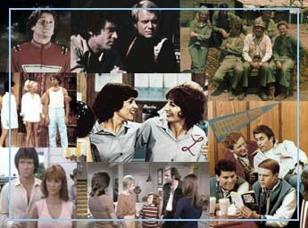

The aircraft seen crashing in the opening sequence of The Six Million Dollar Man was an M2-F2. The audio is from a crash that occurred on May 10, 1967 , at Edwards Air Force base in California . The test pilot, Bruce Peterson ,hit the ground at 250 mph , tumbling six times. He lost use of his right eye and had to stop flying. Understandably, Peterson has said that he hated reliving his accident, week after week. |
The bracelets worn by Wonder Woman in the TV show where said to be made not of iron but of Feminum. |
In the series Land of the Lost , Former Detroit Piston and notorious NBA bad boy Bill Laimbeer played a Sleestak , a bug-eyed, green swamp-man creature. |
Mork & Mindy was a spin-off of Happy Days . Mork, played by Robin Williams, appeared in two episodes: My Favorite Orkan, originally aired Feb. 28, 1978 , and a follow-up episode called Mork Returns, originally aired March 6, 1979 . |
Laverne & Shirley is also a spin off of Happy Days . The two women appeared on an episode as friends of the Fonze. |
A forest fire was part of the plot of the final episode of M*A*S*H because a real forest fire surrounded the location where the crew was filming. |
The Love Boat series was filmed in Hollywood and on two ships from Princess Cruise Lines during their regular voyages from the Virgin Islands and Alaska . Paying passengers were invited to participate as extras, getting a raffle ticket for each day they "worked." Cruises on which filming was planned were always booked solid long in advance. |
The nonsense lyrics of the closing theme to WKRP in Cincinnati were, in part, inspired by the fact that CBS always had an announcer talking over the closing credits of its shows, rendering the songs unintelligible. No one really heard the closing "lyrics" of WKRP until the show went into syndication. |
The creators of Taxi were James L. Brooks, Stan Daniels, Ed Weinberger and David Davis. James L Brooks also helped create The Simpsons . |
When the artist who designed Scooby-Doo was sketching a first draft of the crime-busting canine, he consulted a fellow Hanna-Barbera employee who owned a prize-winning Great Dane . He told her to describe all the attributes that make a Dane great and drew Scooby as the exact opposite. |


Robert Reed , who played the father on the Brady Bunch , kept it a secret that he was gay until he died in 1992. While the cause of his death was cancer, his death certificate indicated that he was also infected with HIV. |
At the end of each episode, a disclaimer appears stating "the voices and music of The Partridge Family were augmented by other performers ." |
Chuck Barris, the creator of The Gong Show , The Dating Game and The Newlywed Game also claimed to be a secret assassin for the CIA who killed 33 people over the course of his career. |
Henry Winkler, the Fonze on Happy Days , was terrified to ride the motorcycle. When exterior footage was shot, it was shot, re-shot and shot again. The problem was that Winkler was so afraid of dropping the bike that he'd put his feet down when ever he leaned into a turn, like while entering the parking lot of Arnold's. The directors would always be following him yelling "feet on the pegs, feet on the pegs." |